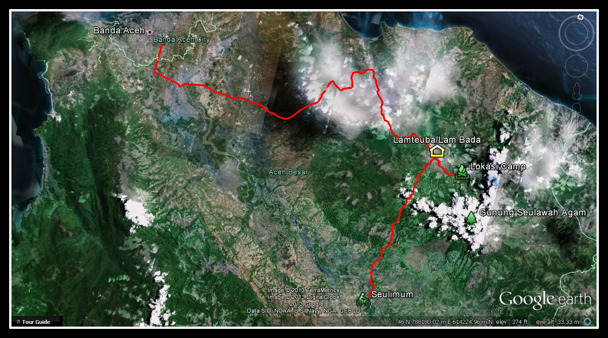

Selayang Pandang
Gampong sejahtera merupakan salah satu desa yang terletak di Kecamatan permai Kabupaten aceh besar Provinsi Aceh. Gampong sejahtera terkenal dengan sektor pertaniannya yang luas nan subur bahkan dalam setiap tahunnya padi yang dihasilkan mencapai 6000 ton. Hal ini pula lah yang menjadi cikal bakal dari melekatnya nama sejahtera sebagai nama desa dengan pertumbuhan ekonomi yang baik dari daerah yang dikelilingi pegunungan ini. Mata pencaharian mayoritas masyarakat di gampong sejahtera adalah petani mengingat luasnya sawah serta perkebunan di daerah kami.
Visi
“mewujudkan gampong sejahtera yang cemerlang dan gemilang”
Misi
Dalam rangka mewujudkan visi gampong sejahtera maka perlu adanya misi sebagai berikut:
- Meningkatkan pengetahuan masyarakat gampong
- Mencerdaskan kehidupan masyarakat melalui sector pendidikan
- Meningkatkan pelayanan publik di gampong sejahtera
- Membentuk aparatur desa yang berkualitas
Profil Kepala Desa
Muhaimin S.IP M.IP merupakan sosok kepala desa atau keuchik gampong sejahtera yang akan menjabat hingga lima tahun kedepan. Pria kelahiran 15 juni 1993 ini merupakan anak sulung dari dua bersaudara yang juga merupakan penduduk asli gampong sejahtera. Sejak kecil beliau menempuh Pendidikan di SDN 1 gampong sejahtera kemudian melanjutkan studinya di tempat yang sama hingga SMA. Pada tahun 2012 beliau menjajaki dunia perkuliahan dan lulus ditahun 2016 hingga saat ini muhaimin merupakan seorang magister ilmu pemerintahan yang menyelesaikan studinya di tahun 2020 silam di universitas syiah kuala. Muhaimin sendiri baru menjabat sebagai keuchik gampong sejahtera pada tahun 2022 tepatnya pada tanggal 15 september 2022 yang akan menjabat hingga tahun 2027 nanti.
Geography
Gampong sejahtera terletak di bagian barat kabupaten aceh besar yang di kelilingi oleh perbukitan. Daerah yang berada di bawah kaki gunung seulawah ini memiliki letak astronomis 5°16′ 15″ – 05° 36′ 16″ Lintang Utara dan 95° 16′ 15″ – 95° 22′ 35″ Bujur Timur dengan tinggi rata-rata 30 meter diatas permukaan laut.
Iklim
Menurut penilitian dinas lingkungan hidup, gampong sejahtera memiliki iklim tropis sama dengan wilayah Indonesia yang beriklim tropis lainnya. iklim tropis ini dikenal dengan 2 musim yakni musim hujan dengan gejolak gelombang laut yang bisanya terjadi di bulan September hingga desember dengan jumlah hari hujan rata-rata 15 hari perbulan. Kemudian musim kemarau yang biasanya akan berlangsung mulai dari bulan januari sampai agustus. Suhu rata rata di gampong sejahtera mencapai 18 °C.
Budaya dan Adat
Sebagai salah satu desa yang jauh dari hiruk pikuk perkotaan tentunya gampong sejahtera masih sangat asri baik dari segi alamnya maupun dari segi adat dan budaya. Gampong sejahtera terkenal dengan budaya dan adat istiadat yang kental yang menjadikan desa ini unik dibandingkan dengan daerah perkotaan. Meskipun zaman sudah modern warga gampong sejahtera tidak pernah meninggalkan kebiasaan-kebiasaan para sesepuh terdahulu mulai dari tradisi tulak bala ketika terjadinya bencana seperti gagal panen dan lainnya hingga acara kenduri blang dan kenduri jeurat masih dilaksanakan di tempat ini.


Peta Wilayah dan Sumber Daya
Berdasarkan hasil riset dinas lingkungan hiduppwilayah gampong sejahtera ditetapkan memiliki luas wilayah 25 Ha dengan jumlah penduduk mencapai 2000 jiwa serta 800 KK terdaftar dengan perbatasan sebagai berikut:
Sebelah barat : Desa Sentosa Kabupaten Aceh Besar
Sebelah timur : Desa Makmur Kabupaten Aceh Besar
Sebelah utara : Desa Aman Kabupaten Aceh Besar
Sebelah selatan : Desa Bahagia Kabupaten Aceh Besar
| Nama Dusun | Jumlah Penduduk | Angka Kelahiran | Angka Kematian |
|---|---|---|---|
| Dusun Bulan | 400 Jiwa | 2 Jiwa | 3 Jiwa |
| Dusun Bintang | 400 Jiwa | 5 Jiwa | 7 Jiwa |
| Dusun Matahari | 500 Jiwa | 3 Jiwa | 0 Jiwa |
| Dusun Galaxy | 700 Jiwa | 0 Jiwa | 2 Jiwa |
Peraturan dan Kebijakan Publik
- UU No 18 Tahun 2018 tentang pencegahan dan pemberantasan dan perusakan hutan
- UU No 32 Tahun 2009 tentang menjaga lingkungan sekitar
Kebijakan
Selain adanya peraturan UU yang mengikat gampong sejahtera juga memiliki beberapa kebajikan sebagai berikut:
- Tidak boleh melakukan kegiatan bertani dan berkebun di hari jumat sebelum selesai shalat jumat
- Gotong royong rutin dilakukan seminggu sekali yaitu hari minggu
- Melestarikan adat istiadat yang ada
Pusat Pelayanan
Location:
Syiah Kuala, Id
Email:
gampongsejahterahebat@gmail.com
Telp:
0823543748092
WhatsApp:
0823543748092